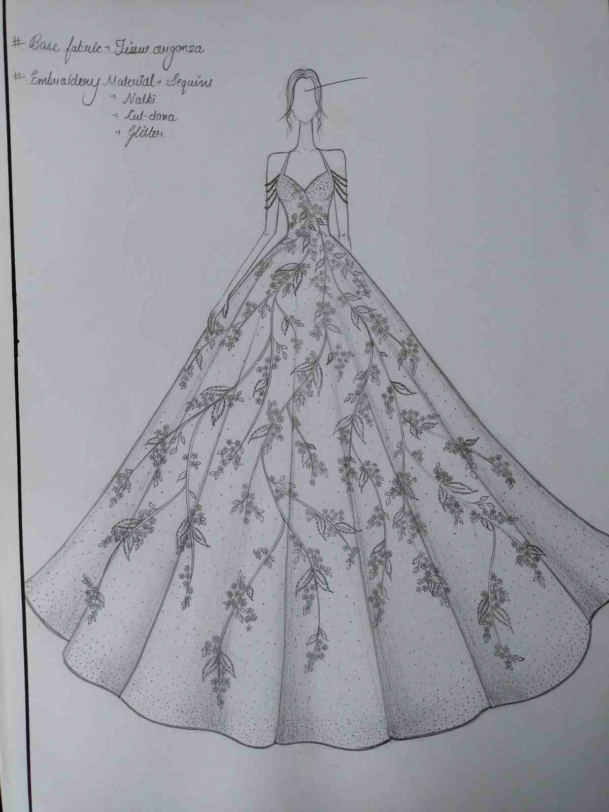
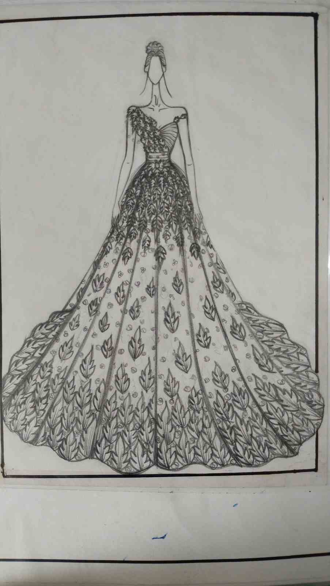
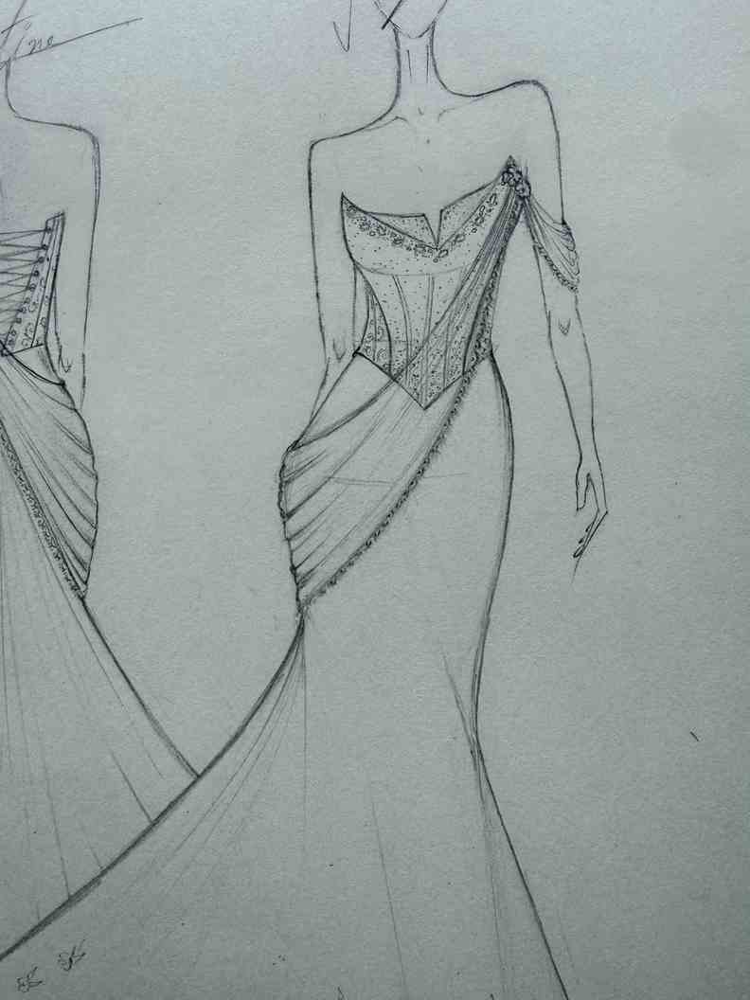

Design intent
Five bridal directions explore proportion, surface detail, movement, and focal placement. The series shows how a shared mood can become distinct, review-ready concepts.
- Focus
- Silhouette & detail
- Output
- Concept presentation

